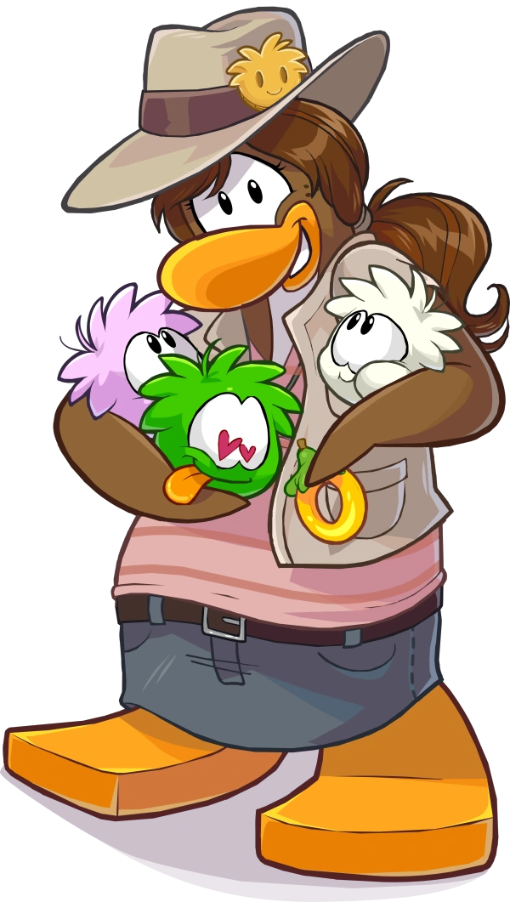

Pinguinando
Personagens

Treinadora de Puffles
Uma agente da Elite Penguin Force que cuida e treina os puffles de elite, também conhecida como Agente TP. Sua primeira aparição foi no jogo de Nintendo DS “Club Penguin: Elite Penguin Force”, além de também aparecer na primeira missão de “Elite Penguin Force: Herbert’s Revenge” (Outro jogo de Nintendo DS). Depois de conhecer a versão online do jogo, a Treinadora de Puffles participou ativamente da construção o Hotel Puffle.